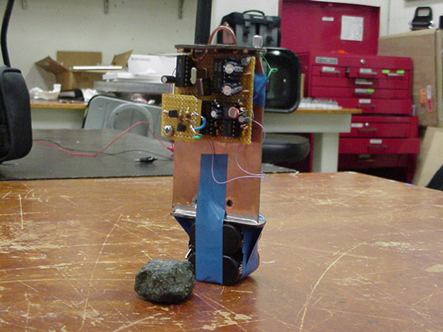
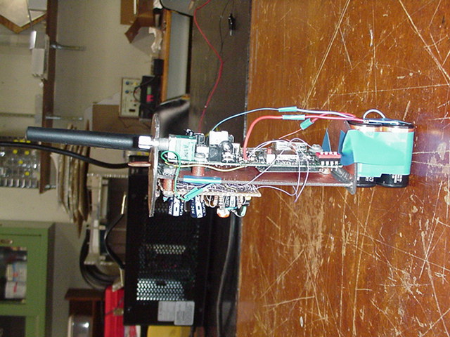
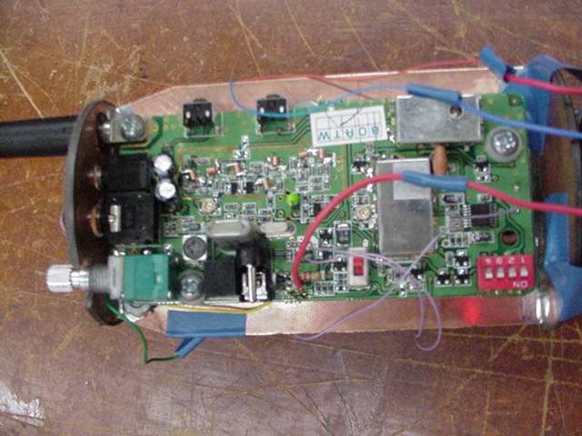
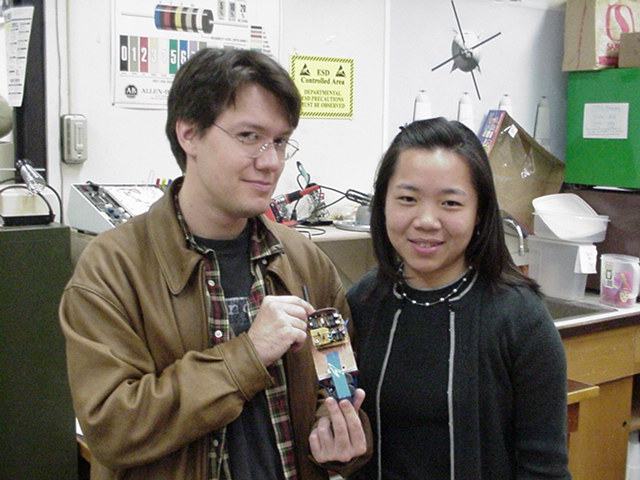

Structures
Project
Procedure
Circuits
Data
Structures
Results
Parts
Several views of the cansat structural design:
Front view of the cansat with frame:

Side view of the cansat with frame:

Back view cansat:

Cansat with suspicious-looking people

Go to the
Electric Circuit Design
BACK
to the Procedure.
BACK
to the Main Page.
Team #1